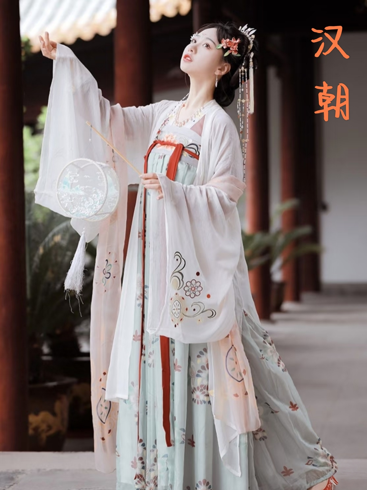
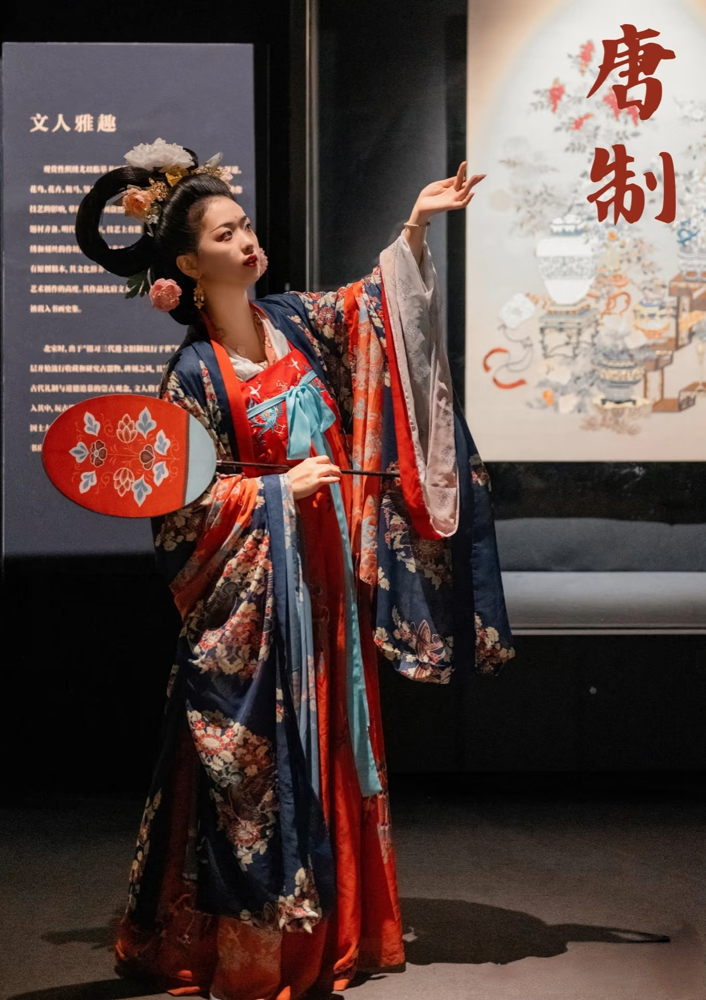
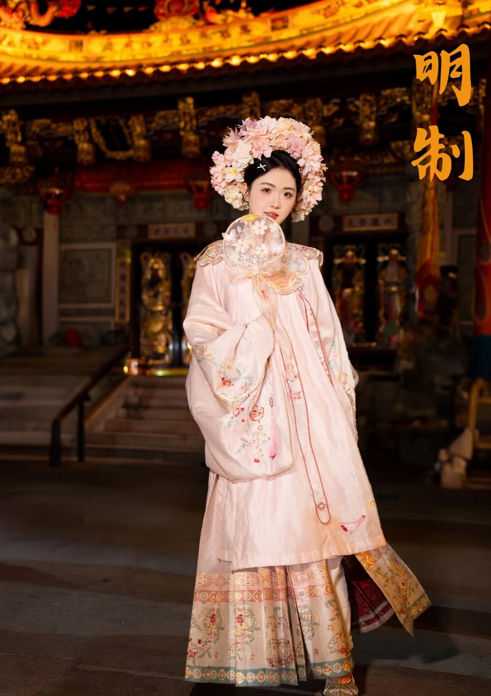

| 寝室主页 | 首页 | 关于汉服 | 历史发展 | 汉服种类 | 汉服风采 |
|---|
汉
朝 |
汉朝的服饰制度承袭了秦朝，并在 东汉明帝永平二年（59年）正式完备。 汉服的主要类型包括袍、襜褕、襦、裙 等。 |
 |
魏 晋 时 期 |
魏晋时期的汉服以长裙拖地、大袖 翩翩为特点，继承了秦汉的遗俗，并吸 收了少数民族的服饰特色。服饰色彩相 对深沉，以暗色调为主。 |
|
唐
朝 |
唐朝的汉服雍容华美，出现了许多 新的形制，如襦裙、圆领袍衫等。唐朝 的汉服代表了汉族服饰的优雅与华贵。 |
 |
宋
代 |
宋代的汉服注重简约和实用，女子 的襦裙相较于唐代更为婉约和低调。色 彩上较为素雅，体现了汉族服饰的清新 和自然之美。 |
|
元 明 清 时 期 |
汉服在保留传统特点的基础上，吸 收了部分外来文化元素，形成了具有时 代特色的汉服。 |
 |